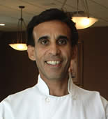

Шеф-повар Майкл Фаттах родился в Александрии, Египет, и проходил обучение в Швейцарии. Он работал в хороших ресторанах в округе Берген, штат Нью-Джерси, в течение 13 лет, прежде чем переехать в Эстеро и открыть ресторан Farfalla в 1998 году. Майкл, 23 года шеф-повар, специализируется на изысканных блюдах итальянской и континентальной кухни. Он известен своим особенным талантом к ингредиентам при приготовлении закусок, легкими, но очень ароматными соусами и вкусными домашними десертами.
Спасибо за ваш интерес к ресторану Farfalla. Мы с большим удовольствием проведем ваш ужин и надеемся,
что сможем помочь вам спланировать ваш особенный вечер. Если вы ищете идеальное место для небольшой
группы или большой вечеринки, наши элегантные столы, отдельные беседки и отдельная столовая подойдут
вам. Наш непревзойденный сервис и внимание к деталям легендарны. Наша национальная кухня получила
высочайшие всемирно известные кулинарные награды. Мы надеемся, что вы выберете ресторан Farfalla,
чтобы попробовать исключительные блюда.
Проведите свой день рождения или юбилейный ужин с нами
и получите один бесплатный домашний десерт.
Атмосфера, качество, индивидуальность. Этим ключевым моментам наше заведение уделяет большое
внимание. Находясь в ресторане Farfalla, вы ощутите гостеприимство, атмосферу домашнего уюта и
индивидуальный подход.